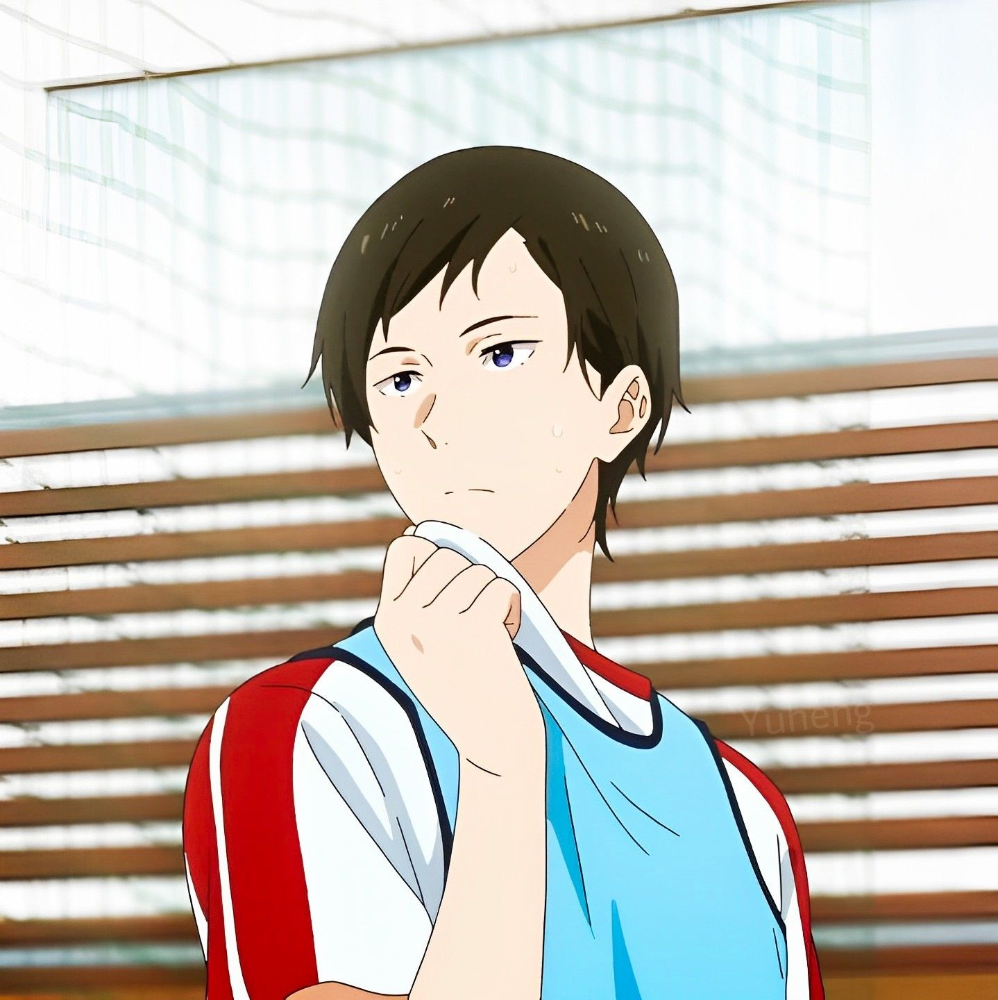

About us
The school's kyudo club had been on the verge of disbandment until the principal ordered Tomio Morioka to restore it. Morioka restored the school's kyudojo with the help of volunteers during the spring break before the new school started, and managed to recruit Seiya Takehaya and Ryohei Yamanouchi on the first day of school. Nanao Kisaragi, Kaito Onogi, Rika Seo, Noa Shiragiku, and Yuna Hanazawa joined later at a kyudo information session. Due to Morioka's back problems from old age, he could not demonstrate shooting techniques easily, so Masaki Takigawa, a fifth dan in kyudo, was brought in to coach the club. The school does not belong any particular school of kyudo, but it uses the reishakei
Kyudo Club Members
Coach
Takigawa Masaki
Morioka Tomio
Student

Rika Seo
Noa Shiragiku
Yuuna Hanazawa
Seiya Takehaya

Minato Narumiya
Ryouhei Yamanouchi
Nanao Kisaragi
Kaito Onogi
Competition Record
Prefectural Tournament Qualifiers